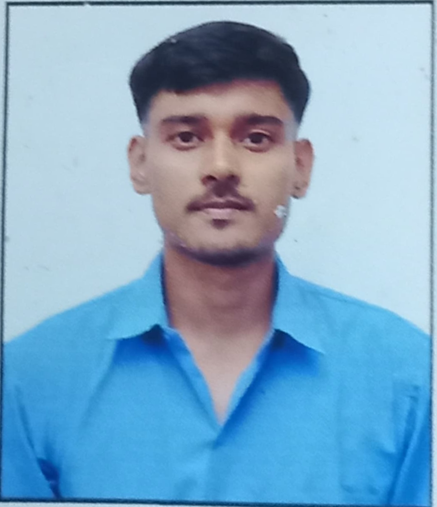

Student | Session 2025
Barasat Government College stands as a pillar of academic excellence. This interface integrates modern graphics and responsive design for an optimal viewing experience across all devices.
| S.No | Academic Stream | Description & Expert Notes |
|---|---|---|
| 01 | Pure Science | Advanced Mathematics and Physical sciences core studies. Note: Ideal for research and technology pathways. |
| 02 | Humanities | Exploration of History, Political Science, and Literature. Note: Develops critical perspective and social analysis. |
| 03 | Biological Science | Comprehensive analysis of Zoology, Botany, and Physiology. Note: Foundation for medical and bio-tech careers. |
(Horizontal swipe table on mobile to view description)